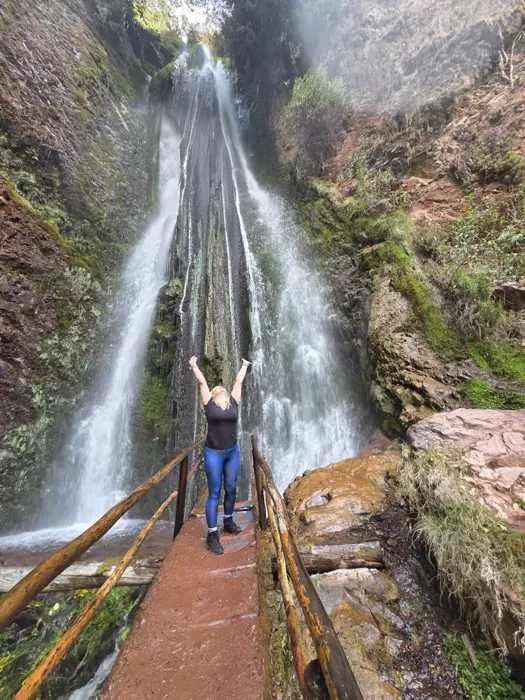
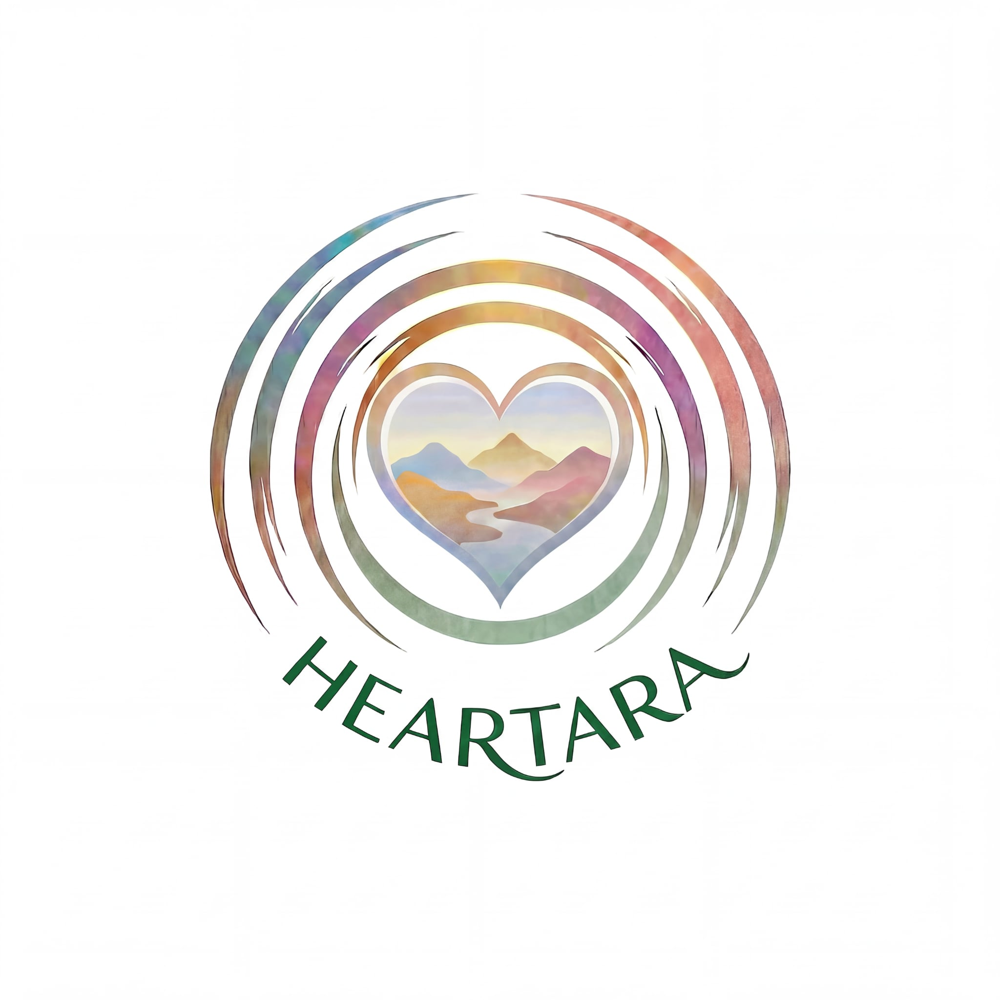
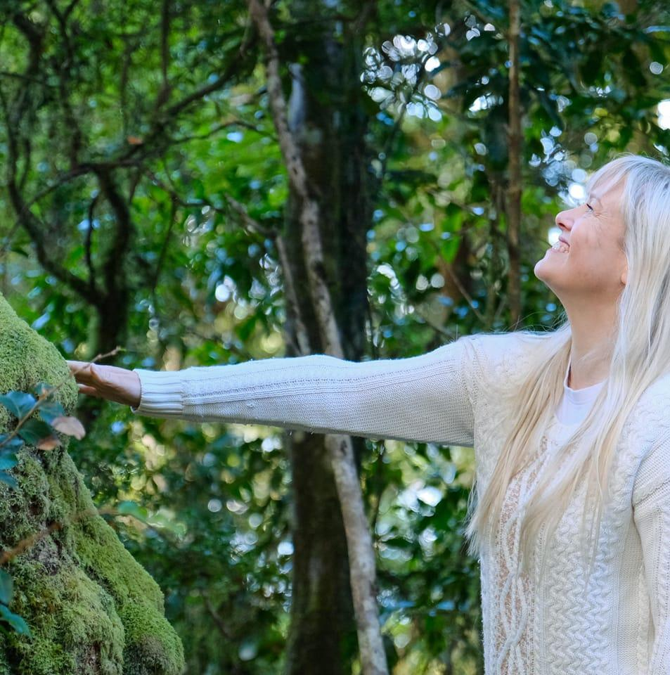
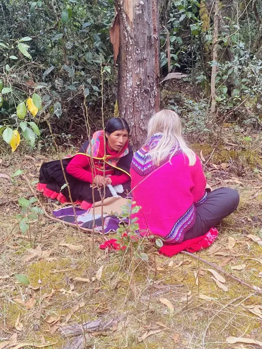
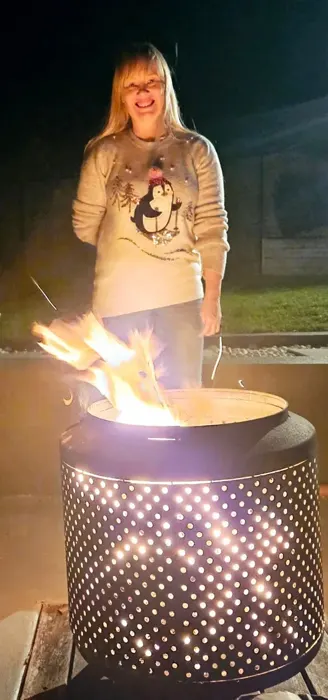
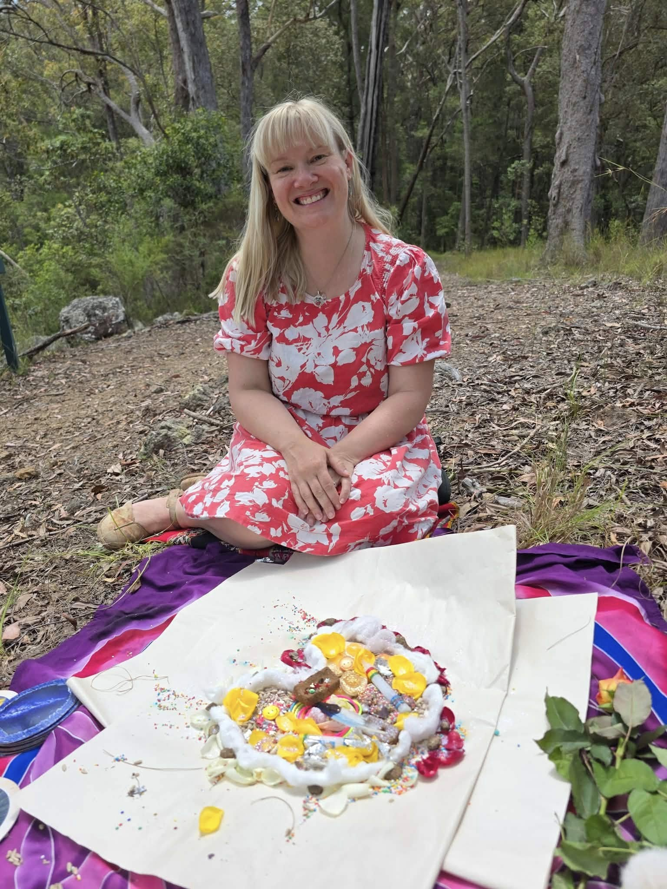

A moment for you
60 minutes · AUD $100
Reiki healing, with space to settle and receive.
90 minutes · AUD $120
Includes an oracle card reading and tuning forks.

RETURN TO YOUR HEARTHEART-LED HEALING · KILLARNEY, QUEENSLAND
A gentle space to pause, reconnect and remember the wisdom that has always been within you.
Read client reviews →✧ Rooted in nature. Guided by the heart.

PENNY KINMAN · HEARTARATHE HEART OF HEARTARA
Beneath the noise of everyday life, there is a quieter part of you that knows the way. Heartara is an invitation to listen. To find your own rhythm. To meet yourself with a little more kindness.
MY OFFERINGS
Individual healing, spiritual connection
and the warmth of shared ceremony.

60 minutes · AUD $100
Reiki healing, with space to settle and receive.
90 minutes · AUD $120
Includes an oracle card reading and tuning forks.

Receive the Munay Ki rites one to one, at a pace guided by what I intuitively sense for you. Despacho ceremony is also part of my offerings.
Explore rites & ceremony ↗
Gather for intention, soul journeying and a heart offering: The Heart Blessing. An invitation to receive and be witnessed in shared presence.
Discover the group offering ↗For appointments and group enquiries, contact Penny directly. Individual session prices are in Australian dollars.
A COMPANION FOR YOUR INNER KNOWING
An oracle for the beautifully human journey. For love and boundaries. Grief and joy. The moments we lose our way, and the moments we remember.
44 main cards, two separate Yes and No bonus cards, and a companion guidebook — created and written by Penny Kinman.
Discover the oracle ↗Release and purchase details to be confirmed.
MEET PENNY
I’m Penny Kinman, founder of Heartara. My path brings together nursing, Reiki, intuition and the everyday experience of being human.
As a Registered Nurse, Reiki Master and Munay Ki practitioner, listening and compassion sit at the heart of my work. Heartara was born where those worlds meet.
I believe we each carry our own wisdom. My role is to hold space as you reconnect with yours — with gentleness, choice and room to simply be.
My journey has also taken me to Peru and through spiritual initiations, including the Munay Karpay initiation in December 2025. I have been trained to offer despacho ceremony, which is now part of my work.
Read my story →With love, PennyDraft introduction for Penny’s review.
LETTERS FROM THE HEART
A place for occasional writing on nature, spiritual practice and the quiet moments that bring us back to ourselves.
Visit the journal ↗GROWING AT THE HEART’S OWN PACE
A vision of rest, ceremony and reconnection in the Killarney ranges. A future sanctuary, with space to gather and simply be.
Future vision · No retreat bookings availableThe Heartara Journey Book and a separate angels and guides oracle are being explored as companions for reflection and remembering.
In development · No release dates announcedKIND WORDS
Reflections from people who have received Reiki with Penny.
Loading client reviews…
Your feedback is welcome. Messages go to Penny for review and are not published automatically. Please share your own experience and avoid including private health information.
This opens your email app. Check the message and press Send there. Nothing is sent or stored by this website. To request removal of a published review, email heartarahealing@gmail.com.
YOU’RE WELCOME HERE
Have a question about a session, the oracle or what’s unfolding?
Send Penny a note. There’s no need to have it all figured out.